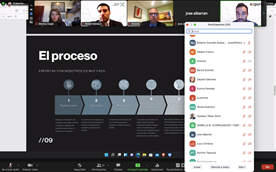

Boletín Digital
Enero
Comité de Proveedores
Oportunidades de proveeduría para la Industria Automotriz.
En el marco del Comité de Proveeduría, industriales del sector automotriz sostuvieron un Networking virtual encabezados por directivos y personal de Venture Connections y de Grupo Exporta , quienes compartieron procesos y soluciones ágiles de proveeduría para el oportuno abastecimiento de componentes en la región y así, crear y mantener relaciones de negocio frente a las circunstancias que actualmente prevalecen a nivel mundial.
Venture Connections
Exporta

Comité de Innovación
Liderazgo tecnológico digital para la Industria Automotriz
En el Comité de Desarrollo de Innovación, contó con la presencia del Director de Robótica y Automatización Discreta de ABB México, Sergio Bautista quien compartió con los industriales de las áreas de desarrollo e ingeniería, la importancia de crear industrias que cuenten con una automatización que pueda tanto eficientar como asegurar la integridad física de los trabajadores.
Hoy en día, la Industria automotriz es el cliente más importante que solicita robots en sus procesos de manufactura , ya que alrededor del 40% de cada empresa (Ter 1 y Tier 2) cuentan con infraestructura robótica en sus instalaciones.
Consulte más información en: https://www.abbrobotics.com.mx/
Comité de Desarrollo Humano
Indicadores laborales para el 2022
En el marco del Comité de Desarrollo Humano, el Director General de CATCH Consulting, Rodrigo Arciniegas, compartió cifras, indicadores y tendencias en relación al Capital Humano para este 2022.
En la sesión virtual, industriales de las empresas afiliadas al CLAUZ, resaltaron que la productividad laboral es un importante indicador económico que está estrechamente relacionado con el crecimiento económico, la competitividad en las empresas. Tales indicadores realizador por CATCH Consulting, permiten a los usuarios, evaluar los niveles y las tasas de crecimiento de la relación entre el PIB y la mano de obra a lo largo del tiempo, proporcionando así información general sobre la eficiencia y la calidad del capital humano en el proceso de producción para un contexto económico y social determinado.
EVENTOS
La Ola Omicron en México:
En dónde estamos, qué sabemos y para dónde vamos.
La Doctora en Ciencias Médicas con especialización en Microbiología, Laurie Ann Ximénez-Fyvie, compartió datos referentes al comportamiento de la nueva variante de COVID-19, Ómicron en nuestro país. En el encuentro virtual que tuvo una duración aproximada de dos horas, la Dra. Ximénez-Fyvie resaltó la importancia de seguir cuidándonos y de no bajar la guardia en los protocolos de sanidad.
También señaló que la variante ómicron tiene la capacidad de poder infectar a las personas que ya tuvieron una enfermedad primaria por otra variante de SARS-CoV-2. “Hemos detectado que de cada 100 personas que estuvieron infectadas, cuatro pueden infectarse, es un promedio, aunque todo depende de manera individual” dijo. Por tal motivo, es importante no bajar la guardia y continuar con las medidas habituales para evitar el contagio: permanecer en casa el mayor tiempo posible, lavado de manos, uso de cubrebocas, sana distancia y aplicación de gel antibacterial.
Conferencia sobre Inconstitucionalidad de la Reforma Fiscal 2022
Directivos del Instituto Benemérito de Ciencias Jurídicas ofrecieron una conferencia virtual para dar detalle sobre la inconstitucionalidad de la iniciativa de Reforma Fiscal presentada el pasado 7 de septiembre del 2021 por el Ejecutivo Federal el cual permite identificar diversos argumentos referentes a tal decreto desde sus diversas aplicaciones.
Lecciones de agilidad para la Industria Automotriz con VW-GAM
Expertos de Volkswagen Group Academy (GAM), compartieron la diversidad de lecciones de agilidad para la Industria Automotriz a través de los marcos ágiles pasando por los beneficios de la agilidad y su impacto en las empresas y así, dar paso a modelos convencionales tales como mindset y modelos de trabajo ágiles dentro de la empresa.
Perspectivas de la Industria de Vehículos ligeros para el 2022
En los últimos 20 años, los protagonistas de la producción de vehículos ligeros han cambiado sustancialmente, sobre todo por la irrupción de países asiáticos que incrementaron considerablemente su capacidad de fabricación. Por tal motivo, la Red Nacional del Clustes y el Clúster Automotriz Zona Centro, te invitan a participar en la conferencia virtual sobre las Perspectivas de la Industria de Vehículos ligeros para el 2022.
Registro: https://forms.gle/76FhmwMFBQSyzzQu6
Proyecciones para el 2022 en la Industria Automotriz de América del Norte
Lo invitamos a participar en una serie de conversaciones con líderes de las industrias automotrices y de fabricación a través de un panel de discusión en el que nuestros colegas de la industria y los abogados de Clark Hill Law analizarán los principales problemas legales y de la cadena de suministro.
La cita es el próximo miércoles 2 de febrero en punto de la:
1:00 P.M. ET / 12:00 P.M. CT / 10:00 A.M. PT
Registro: https://lnkd.in/giJSg_fw
Fortalecimiento de la Cadena de valor Automotriz Impulsada por datos
Conozca las características de la Cadena Global de valor Automotriz tales como su estructura, lineamientos y acciones de comercialización para el desarrollo comercial del sector a través del encuentro virtual gratuito, Fortalecimiento de la cadena de valor Automotriz impulsada por Datos que el Clúster Automotriz Zona Centro y Red SInergia Consultoría llevarán a cabo.
Link de registro:
https://us02web.zoom.us/webinar/register/WN_xT7sb1DVQDKDan5DDGfAPA